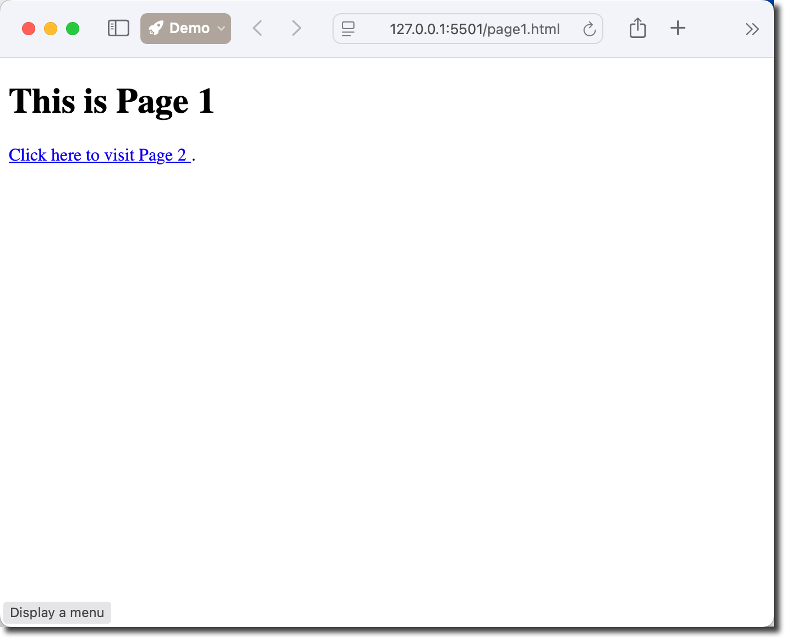
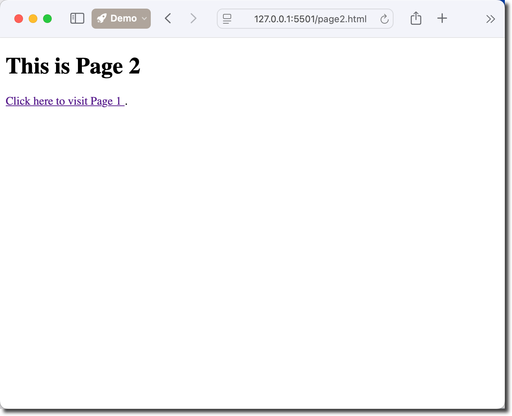

Objectives
Create links between pages in a website.
Tools Needed
You will need a code editor and a web browser.
Internal links connect to pages within your own website
and use relative paths like href="about.html" or
href="../contact.html". These links keep visitors on your
site and load faster since they don't require connecting to external
servers.
External links point to pages on other websites and
require full URLs like href="https://example.com". They take
users away from your site to another domain, so it's often good practice
to add target="_blank" to open them in a new tab, keeping
your original page accessible to the visitor.
Anchor tags (<a>) are HTML elements
used to create clickable links on web pages. The
href attribute specifies the destination.
<a href="contact.html">Contact Us</a> creates an
internal link, while
<a href="https://mtsac.edu/cis">CIS Department</a>
links to an external site.
You can also link to sections within the same page using
<a href="#section-id">Jump to Section</a> where
the target element has id="section-id".
Additional attributes like target="_blank" open links in new
tabs, and title="Description" provide hover tooltips for
better user experience.
Create two basic html files.
These will be Page 1 and Page 2.
Name the html files page1.html and page2.html.
Update the title to "Page 1" for page1.html and "Page 2" for page2.html.
Add an h1 for page1.html that is "This is Page 1".
Creat a blank *styles.css file.
Your working folder should be similar to this:
WorkingFolder ├── page1.html ├── page2.html └── styles.css
We are going to create links to move from Page 1 to Page 2 and from Page 2 back to Page 1.
Create a new paragraph and insert this code into page1.html.
<a href="page2.html" title="Navigate to Page 2">
Click here to visit Page 2
</a>.
Insert the following into page2.html.
<a href="page1.html" title="Navigate to Page 1">
Click here to visit Page 1
</a>.
Test that the links work to send you back and forth between the pages.

